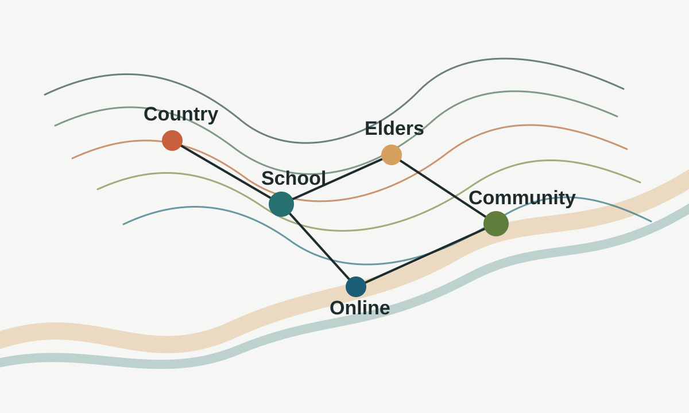

Preventative Focus
Centres early support, school engagement and cultural belonging rather than only post-release intervention.
Education, culture and prevention
A two-pronged model that combines face-to-face cultural immersion with an online support space for students, educators, Elders and community partners.

The program responds to a gap in current justice and support systems: many responses are strongest after incarceration or during reintegration, while fewer address the conditions that can lead young people toward justice-system contact.
This site presents the proposal as an information hub rather than a group report. It focuses on the issue, the program structure and the ways people can ask questions or contribute feedback.
Strengthen cultural identity, educational belonging and trusted community connection before crisis points emerge.
Centres early support, school engagement and cultural belonging rather than only post-release intervention.
Designed to be shaped by local Country, local Elders, school context and community needs.
The digital layer makes the model easier to adapt across rural and regional school communities.